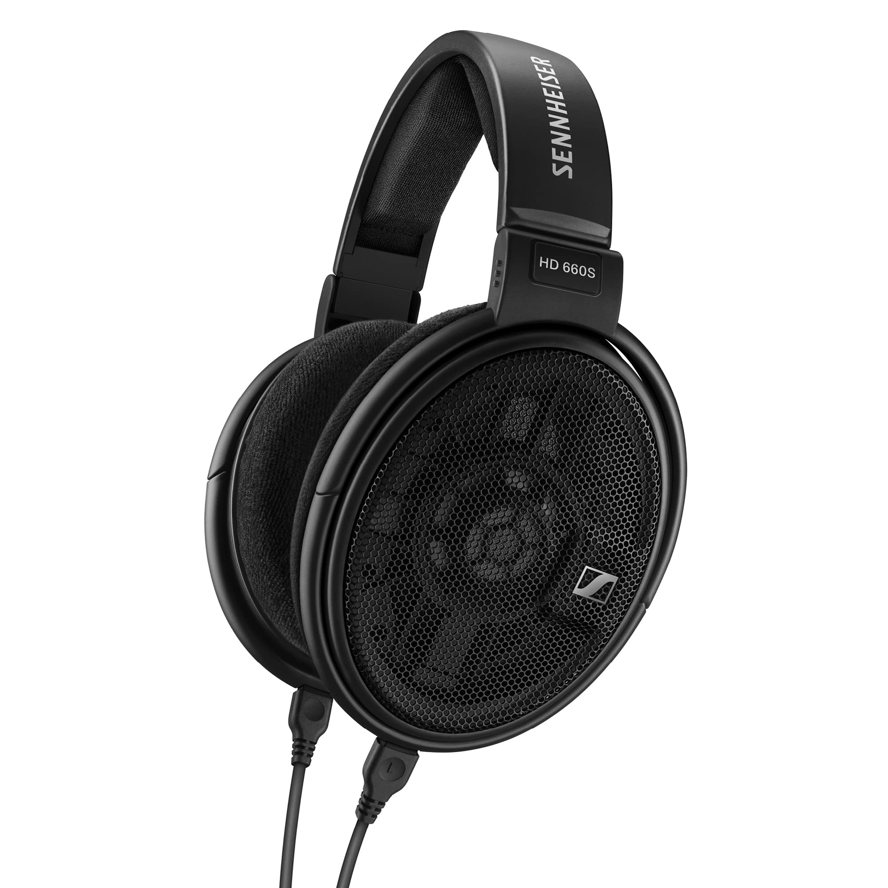

Closed-back headphones are built exactly how the name suggests. The housing of closed-back headphones is sealed to block any sound from escaping. This has the same effect on outside noise, as well, giving you impressive isolation. You’ll notice that these headphones can feel more substantial and chunkier than their open-back counterparts.
By Yip Cheuk Wing, Audiophile Club Leader
You may be asking yourself, “Open-back vs. closed-back headphones… what’s the difference?” The difference is in the way their housings are constructed. For personal listening and professional applications where external noise or using your phone’s speaker is an issue, a closed-back design will be your best friend. For casual listening at home or behind closed doors, you may like a pair of open-backs. Take it from the audio professionals at Sweetwater; it pays to know the difference between closed-back and open-back headphones before dropping some cash for a nice pair.
Closed back headphones
Key Features:
Pros:
Cons:
Closed-back headphones are headphones that are completely sealed around the back of the ear cups, only allowing sound out only where it can reach your ear.
Pros:
- Noise Isolation
- Have Greater Bass Quantity
Cons:
- Cramped
- Less naturalness in audio reproduction
Open back headphones
Open-back headphones have a similar design to closed-back headphones with an important distinction. The outer housing has built-in gaps that allow air and sound to pass freely through the earcup. A perforated housing eliminates pressure buildup and encourages a more natural sound that’s ideal for critical listening. They’re lightweight and incredibly comfortable to wear for long periods of time.

Key Features:
Cons:
Open-back headphones allow air to pass through their ear cups from the rear of the speaker driver.
Pros:
- Natural sounding
- Less crampy than closed back
- Wider sound stage
Cons:
- Sound leakage
- Ambient(surrounding) sound can be heard
- Less detailed sounding
Verdict
Open-back headphones are fabulous if you don't mind noise leakage and want the most natural sound, whereas closed-back headphones may be better for mixing, recording, traveling, and gaming. Open-back headphones are better for mixing, recording, traveling, and gaming.